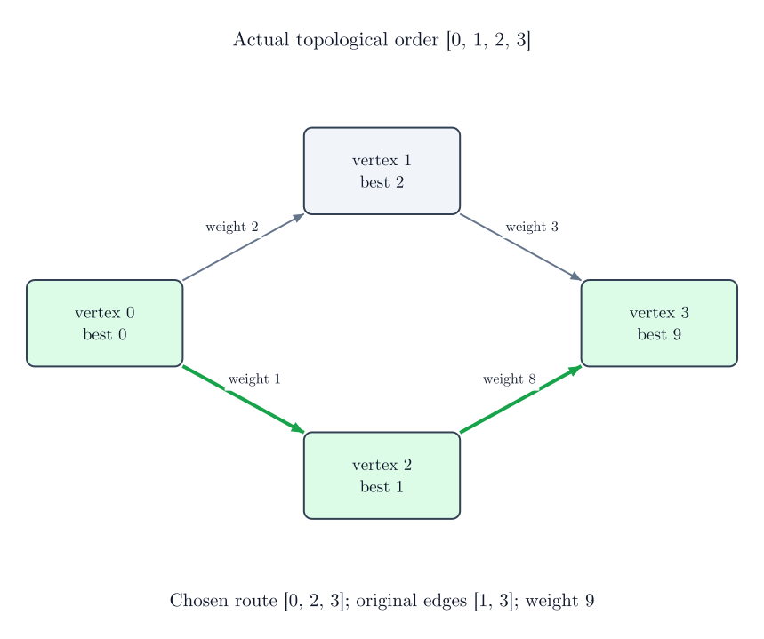
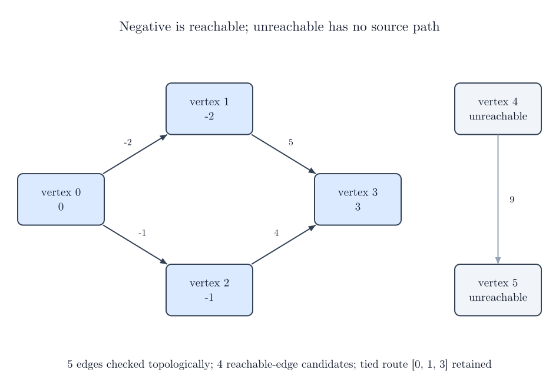
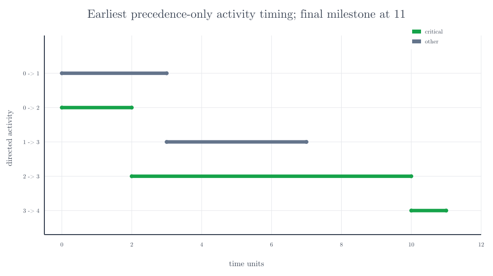
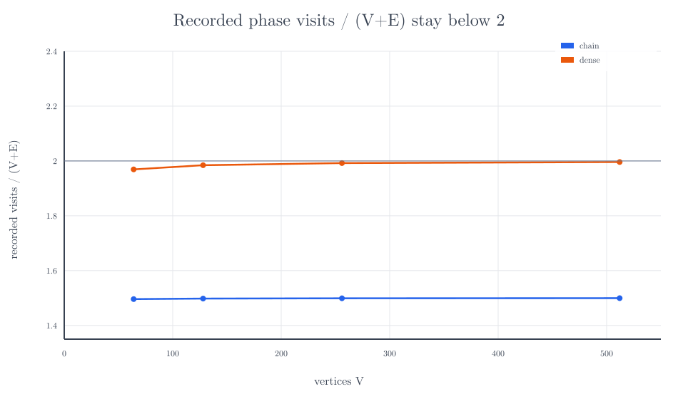

DAG Longest Paths: Finalize Predecessors, Relax Once, Recover the Route
Abstract
A directed acyclic graph turns longest-path optimization into dynamic programming: process vertices in topological order and maximize each outgoing candidate. We retain the original four-vertex example and recover its actual route 0→2→3 of length 9. Native traces then distinguish finite negative paths from unreachable vertices, retain exact parallel-edge identities, and show how strict ties depend on processing order. A precedence network derives earliest feasible milestone times, while chain and dense DAG workloads count the actual ordering and relaxation phases. One canonical core supplies the legacy result, full traces and safe local witness recovery. Whole-graph cycle checks and finite candidate additions prevent misleading partial results. The recurrence is exact in exact arithmetic; ordinary double sums can merge distinct real path totals, a limitation demonstrated explicitly below.
Begin with the original four-vertex diamond
The edges are 0→1 with weight 2, 0→2 with weight 1, 1→3 with weight 3 and 2→3 with weight 8. From source 0, the two complete routes weigh 5 and 9. The original report prints 9. Here the same core also exposes the order and actual improvements: vertex 3 first receives 5 through vertex 1, then 9 through vertex 2. The chosen edge ids are 1 and 3 in the original input vector.
#include <dm/dm.hpp>
int main() {
std::filesystem::create_directories("build");
const std::vector<dm::algorithms::WeightedEdge> edges{{0,1,2},{0,2,1},{1,3,3},{2,3,8}};
const auto t=dm::algorithms::dag_longest_paths_trace(4,edges,0);const auto p=dm::algorithms::dag_longest_path_to(t,3);
const auto old=dm::algorithms::dag_longest_paths(4,edges,0);
if(old.distance[3]!=9 || p.vertices!=std::vector<std::size_t>{0,2,3} || p.edge_indices!=std::vector<std::size_t>{1,3}) return 1;
std::print("| attempt | original edge | from | to | finalized tail distance | old destination | candidate | improved |\n| ---: | ---: | ---: | ---: | ---: | ---: | ---: | :--- |\n");
for(std::size_t i=0;i<t.relaxations.size();++i) {
const auto& e=t.relaxations[i];const auto& edge=t.edges[e.edge_index];
std::print("| {} | {} | {} | {} | {} | {} | {} | {} |\n",i+1,e.edge_index,std::get<0>(edge),std::get<1>(edge),e.from_distance,e.previous_distance,e.candidate,e.improved);
}
dm::graphics::Diagram d(78,1100);dm::graphics::DiagramNodeStyle box;box.width=2.25;box.height=1.25;box.font_size=19;
const std::vector<dm::graphics::DiagramPoint> positions{{0,0},{4,2.2},{4,-2.2},{8,0}};
for(std::size_t v=0;v<4;++v) {
box.fill=std::find(p.vertices.begin(),p.vertices.end(),v)!=p.vertices.end()?dm::graphics::RGB{220,252,231}:dm::graphics::RGB{241,245,249};
d.node(std::to_string(v),positions[v],std::format("vertex {}\nbest {}",v,t.result.distance[v]),box);
}
for(std::size_t i=0;i<edges.size();++i) {
const bool chosen=std::find(p.edge_indices.begin(),p.edge_indices.end(),i)!=p.edge_indices.end();dm::graphics::DiagramStroke stroke;stroke.width=chosen?4:2;stroke.color=chosen?dm::graphics::RGB{22,163,74}:dm::graphics::RGB{100,116,139};
const auto& e=edges[i];d.edge(std::to_string(std::get<0>(e)),std::to_string(std::get<1>(e)),std::format("weight {}",std::get<2>(e)),stroke);
}
d.text({4,4.1},std::format("Actual topological order {}",t.topological_order),22)
.text({4,-4},std::format("Chosen route {}; original edges {}; weight {}",p.vertices,p.edge_indices,p.weight),21)
.save_svg("build/dag_longest_diamond.svg");
std::print("\nOriginal result {}; chosen vertices {}; original edge ids {}; stored total {}.\n",old.distance[3],p.vertices,p.edge_indices,p.weight);
}| attempt | original edge | from | to | finalized tail distance | old destination | candidate | improved |
|---|---|---|---|---|---|---|---|
| 1 | 0 | 0 | 1 | 0 | -inf | 2 | true |
| 2 | 1 | 0 | 2 | 0 | -inf | 1 | true |
| 3 | 2 | 1 | 3 | 2 | -inf | 5 | true |
| 4 | 3 | 2 | 3 | 1 | 5 | 9 | true |
Original result 9; chosen vertices [0, 2, 3]; original edge ids [1, 3]; stored total 9.

Derive the recurrence and its proof
For a fixed source s, let D(s)=0 for the empty path and D(v)=−∞ initially for v≠s. For v≠s, the exact-arithmetic longest-path recurrence is
A DAG admits a topological ordering: every edge goes from an earlier vertex to a later one. Induct on that order. When u is processed, all of its predecessors have been processed, so every path to u has already contributed its last-edge candidate. Every path to a successor v decomposes into a path to one such predecessor and the final edge. Taking their maximum is therefore sound and complete. Once all predecessors of v have run, D(v) is final. Negative edge weights do not disturb this ordering argument. Every directed path in a DAG is simple, so cycles cannot create repeated-vertex walks.
The unrestricted simple longest-path problem is NP-hard. With unit weights, a simple path of V−1 edges is exactly a Hamiltonian path, so a general exact longest-path solver would decide Hamiltonian-path existence. Restricting the input to a DAG supplies the topological order used by this dynamic program. This implementation requires the entire input graph to be acyclic, including components unreachable from s. A self-loop is a cycle. Kahn's algorithm queues all zero-indegree vertices, removes each once and decrements the indegree along each outgoing edge. If fewer than V vertices are removed, the remaining vertices contain a cycle; the function rejects before attempting any numerical relaxations.
Initial ready vertices are queued in increasing id. Newly ready vertices are appended in original outgoing-edge order. This is a FIFO policy, not a smallest-id priority queue, and uses no sorting. Relaxations use strict stored candidate>D(v), without an epsilon. Equal stored candidates retain the first witness established by that processing order; no lexicographically smallest route or unique optimum is promised. Parallel edges remain separate, and predecessor-edge ids identify which one was chosen.
Negative paths, unreachable vertices and ties are different cases
In the next graph, routes 0→1→3 and 0→2→3 both weigh 3: −2+5 and −1+4. The first reaches vertex 3 earlier in the actual topological order and keeps the tie. Vertex 1 is reachable with distance −2. Vertices 4 and 5 form a separate acyclic component and are unreachable from source 0. Their negative- infinite distances are sentinels, rather than large negative path weights. The source itself has a valid one-vertex, zero-edge witness of weight zero.
#include <dm/dm.hpp>
int main() {
std::filesystem::create_directories("build");
const std::vector<dm::algorithms::WeightedEdge> edges{{0,1,-2},{0,2,-1},{1,3,5},{2,3,4},{4,5,9}};
const auto t=dm::algorithms::dag_longest_paths_trace(6,edges,0);const auto chosen=dm::algorithms::dag_longest_path_to(t,3);
if(t.result.distance[1]!=-2 || t.result.predecessor[3]!=1 || chosen.weight!=3 || dm::algorithms::dag_longest_path_to(t,5).found) return 1;
std::print("| vertex | reachable | stored distance | vertex witness | edge witness |\n| ---: | :--- | :--- | :--- | :--- |\n");
dm::graphics::Diagram d(70,1150);dm::graphics::DiagramNodeStyle box;box.width=2.1;box.height=1.25;box.font_size=19;
const std::vector<dm::graphics::DiagramPoint> positions{{0,0},{3.6,2.2},{3.6,-2.2},{7.2,0},{10.6,2.2},{10.6,-2.2}};
for(std::size_t v=0;v<6;++v) {
const auto p=dm::algorithms::dag_longest_path_to(t,v);const auto distance=p.found?std::format("{}",p.weight):"unreachable";
std::print("| {} | {} | {} | {} | {} |\n",v,p.found,distance,p.vertices,p.edge_indices);
box.fill=p.found?dm::graphics::RGB{219,234,254}:dm::graphics::RGB{241,245,249};
d.node(std::to_string(v),positions[v],std::format("vertex {}\n{}",v,distance),box);
}
for(std::size_t i=0;i<edges.size();++i) {
const auto& e=edges[i];dm::graphics::DiagramStroke stroke;stroke.color=i==4?dm::graphics::RGB{148,163,184}:dm::graphics::RGB{51,65,85};
d.edge(std::to_string(std::get<0>(e)),std::to_string(std::get<1>(e)),std::format("{}",std::get<2>(e)),stroke);
}
d.text({5.3,4.2},"Negative is reachable; unreachable has no source path",23)
.text({5.3,-4},std::format("{} edges checked topologically; {} reachable-edge candidates; tied route {} retained",t.work.topological_edge_visits,t.work.relaxation_attempts,chosen.vertices),19)
.save_svg("build/dag_longest_signed.svg");
const auto parallel=dm::algorithms::dag_longest_paths_trace(2,{{0,1,1},{0,1,3},{0,1,3}},0);
const auto p=dm::algorithms::dag_longest_path_to(parallel,1);
if(p.edge_indices!=std::vector<std::size_t>{1}) return 1;
std::print("\nActual order {}; whole-graph vertices {}; reachable vertices {}; attempted reachable edges {}.\n",t.topological_order,t.work.topological_pops,t.work.reachable_vertices,t.work.relaxation_attempts);
std::print("Parallel weights (1,3,3): chosen original edge {}; strict improvements {}; last equal candidate improved {}.\n",p.edge_indices,parallel.work.improvements,parallel.relaxations.back().improved);
}| vertex | reachable | stored distance | vertex witness | edge witness |
|---|---|---|---|---|
| 0 | true | 0 | [0] | [] |
| 1 | true | -2 | [0, 1] | [0] |
| 2 | true | -1 | [0, 2] | [1] |
| 3 | true | 3 | [0, 1, 3] | [0, 2] |
| 4 | false | unreachable | [] | [] |
| 5 | false | unreachable | [] | [] |
Actual order [0, 4, 1, 2, 5, 3]; whole-graph vertices 6; reachable vertices 4; attempted reachable edges 4. Parallel weights (1,3,3): chosen original edge [1]; strict improvements 2; last equal candidate improved false.

The legacy two-vector result uses predecessor V for both source and unreachable vertices. The trace additionally uses predecessor-edge E as its sentinel. A native path record distinguishes unreachable (found=false, empty arrays, weight −∞) from source (found=true, one vertex, no edges, weight zero). Recovery checks shapes, source markers, visited parent/edge endpoints, finite weights and the stored double recurrence. A chain-length guard rejects edited predecessor cycles without recursion. These local checks do not certify an arbitrarily edited graph's global acyclicity or optimality, and do not rerun the topological dynamic program. Results own their edges, arrays and paths.
Precedence timing: a longest path gives an earliest feasible event time
For nonnegative activity durations on edges, fix the starting milestone time t(0)=0 and require t(v)≥t(u)+w(u,v) for every precedence edge. Suppose all milestones are reachable from 0. Following any path gives a lower bound on t(v), so every feasible timing must satisfy t(v)≥D(v). Conversely, the longest-path recurrence gives D(v)≥D(u)+w(u,v) for every edge. Thus t=D is itself feasible and is componentwise earliest. The final milestone time is a lower bound attained by this precedence-only model.
Use activities 0→1 (3), 0→2 (2), 1→3 (4), 2→3 (8) and 3→4 (1). Earliest milestone times are (0,3,2,10,11), with binding route 0→2→3→4. The 1→3 activity can finish at 7, but milestone 3 waits until 10 for the other prerequisite. The model allows parallel work with unlimited resources; limited crews, machines, release calendars and uncertain durations would require additional scheduling constraints.
#include <dm/dm.hpp>
int main() {
std::filesystem::create_directories("build");
const std::vector<dm::algorithms::WeightedEdge> edges{{0,1,3},{0,2,2},{1,3,4},{2,3,8},{3,4,1}};
const auto t=dm::algorithms::dag_longest_paths_trace(5,edges,0);const auto critical=dm::algorithms::dag_longest_path_to(t,4);
if(t.result.distance!=std::vector<double>{0,3,2,10,11} || critical.edge_indices!=std::vector<std::size_t>{1,3,4}) return 1;
std::print("| original activity edge | earliest start | duration | activity can finish | destination milestone | chosen critical route |\n| :--- | ---: | ---: | ---: | ---: | :--- |\n");
auto plot=dm::graphics::RPlot::create();std::vector<double> rows;std::vector<std::string> labels;
for(std::size_t i=0;i<edges.size();++i) {
const auto& e=edges[i];const auto u=std::get<0>(e),v=std::get<1>(e);const double start=t.result.distance[u],finish=start+std::get<2>(e),row=4-static_cast<double>(i);
if(t.result.distance[v]<finish) return 1;
const bool binding=std::find(critical.edge_indices.begin(),critical.edge_indices.end(),i)!=critical.edge_indices.end();
std::print("| {} -> {} | {} | {} | {} | {} | {} |\n",u,v,start,std::get<2>(e),finish,t.result.distance[v],binding);
const auto colour=binding?dm::graphics::RGB{22,163,74}:dm::graphics::RGB{100,116,139};
plot.line(std::vector<double>{start,finish},std::vector<double>{row,row},"",colour,7)
.points(std::vector<double>{start,finish},std::vector<double>{row,row},"",colour,4);
rows.push_back(row);labels.push_back(std::format("{} -> {}",u,v));
}
plot.y_ticks(rows,labels).x_limits(-.5,12).y_limits(-.7,5.1)
.legend({"critical","other"},{{22,163,74},{100,116,139}})
.title("Earliest precedence-only activity timing; final milestone at 11")
.x_label("time units").y_label("directed activity").size(1000,560).save_svg("build/dag_longest_timing.svg");
std::print("\nEarliest milestone times {}; recovered critical vertices {}; project completion {}.\n",t.result.distance,critical.vertices,critical.weight);
}| original activity edge | earliest start | duration | activity can finish | destination milestone | chosen critical route |
|---|---|---|---|---|---|
| 0 -> 1 | 0 | 3 | 3 | 3 | false |
| 0 -> 2 | 0 | 2 | 2 | 2 | true |
| 1 -> 3 | 3 | 4 | 7 | 10 | false |
| 2 -> 3 | 2 | 8 | 10 | 10 | true |
| 3 -> 4 | 10 | 1 | 11 | 11 | true |
Earliest milestone times [0, 3, 2, 10, 11]; recovered critical vertices [0, 2, 3, 4]; project completion 11.

This is an activity-on-edge interpretation of longest paths, not a new resource-constrained scheduler. The recovered critical route is one binding witness. Multiple equal critical routes can exist, just as multiple longest paths can tie in the previous example.
Count the actual phases against both vertices and edges
With adjacency lists, complete validation and construction take O(V+E), Kahn ordering takes O(V+E), and the final pass scans every vertex plus each edge whose tail is reachable, E_R≤E. Thus the total bound is O(V+E) time and storage, including owned trace edges and at most E relaxation events. There is no enumeration of all paths. Recording V topological pops, E indegree-edge visits and E_R candidate attempts gives V+E+E_R≤2(V+E) for these recorded phases. Validation, construction and copying are additional linear work omitted from this particular counter sum.
The reusable forward-band generator connects u→u+d for 1≤d≤b within the vertex range. It has b(V−b)+b(b−1)/2 edges for b clamped to V−1. Width one is a chain with V−1 edges; full width is a dense forward DAG with V(V−1)/2 edges. A dense DAG therefore has quadratic work in V even though the bound is linear in V+E. The generator checks its complete output count and optional edge cap before allocation; no report-local graph algorithm is required.
#include <dm/dm.hpp>
int main() {
std::filesystem::create_directories("build");
auto plot=dm::graphics::RPlot::create();const std::vector<dm::graphics::RGB> colours{{37,99,235},{234,88,12}};
std::print("| family | vertices | edges | topological pops | topological edge visits | candidate attempts | recorded phase visits | visits / (V+E) |\n| :--- | ---: | ---: | ---: | ---: | ---: | ---: | ---: |\n");
for(int family=0;family<2;++family) {
std::vector<double> sizes,ratios;
for(std::size_t n:{64,128,256,512}) {
const auto edges=dm::algorithms::dag_forward_band_edges(n,family?n:1);
const auto t=dm::algorithms::dag_longest_paths_trace(n,edges,0);
const auto visits=t.work.topological_pops+t.work.topological_edge_visits+t.work.relaxation_attempts;
if(t.result.distance.back()!=n-1 || t.work.topological_edge_visits!=edges.size() || t.work.relaxation_attempts!=edges.size() || visits>2*(n+edges.size())) return 1;
const double ratio=static_cast<double>(visits)/(n+edges.size());sizes.push_back(n);ratios.push_back(ratio);
std::print("| {} | {} | {} | {} | {} | {} | {} | {:.6f} |\n",family?"dense":"chain",n,edges.size(),t.work.topological_pops,t.work.topological_edge_visits,t.work.relaxation_attempts,visits,ratio);
}
plot.line(sizes,ratios,family?"dense":"chain",colours[family],2.5).points(sizes,ratios,"",colours[family],4);
}
plot.line(std::vector<double>{0,550},std::vector<double>{2,2},"",{100,116,139},1)
.legend({"chain","dense"},colours).title("Recorded phase visits / (V+E) stay below 2")
.x_label("vertices V").y_label("recorded visits / (V+E)").x_limits(0,550).y_limits(1.35,2.4).size(950,560)
.save_svg("build/dag_longest_work.svg");
const double h=std::ldexp(1.0,53);const auto rounded=dm::algorithms::dag_longest_paths_trace(4,{{0,1,h},{0,2,h},{1,3,0},{2,3,1}},0);
const auto p=dm::algorithms::dag_longest_path_to(rounded,3);const std::uint64_t exact_longer=(std::uint64_t{1}<<53)+1;
if(p.vertices!=std::vector<std::size_t>{0,1,3} || rounded.result.distance[3]!=h) return 1;
std::print("\nBinary64 control: stored total {:.0f}; retained route {}; exact integer total of the other route {}.\n",p.weight,p.vertices,exact_longer);
const double maximum=std::numeric_limits<double>::max();int rejections=0;
try {dm::algorithms::dag_longest_paths(4,{{2,3,1},{3,2,1}},0);} catch(const std::invalid_argument&) {++rejections;}
try {dm::algorithms::dag_longest_paths_trace(3,{{0,1,1},{1,2,1}},0,2,0);} catch(const std::length_error&) {++rejections;}
try {dm::algorithms::dag_longest_paths(3,{{0,1,maximum},{1,2,maximum}},0);} catch(const std::overflow_error&) {++rejections;}
try {dm::algorithms::dag_longest_paths(3,{{0,1,-maximum},{1,2,-maximum},{0,2,0}},0);} catch(const std::overflow_error&) {++rejections;}
const auto unreachable=dm::algorithms::dag_longest_paths_trace(4,{{1,2,maximum},{2,3,maximum}},0);
if(rejections!=4 || unreachable.work.relaxation_attempts!=0) return 1;
std::print("Unreachable cycle, complete vertex cap, positive overflow and losing negative overflow: {} expected rejections. Unreachable huge-edge candidates evaluated {}.\n",rejections,unreachable.work.relaxation_attempts);
}| family | vertices | edges | topological pops | topological edge visits | candidate attempts | recorded phase visits | visits / (V+E) |
|---|---|---|---|---|---|---|---|
| chain | 64 | 63 | 64 | 63 | 63 | 190 | 1.496063 |
| chain | 128 | 127 | 128 | 127 | 127 | 382 | 1.498039 |
| chain | 256 | 255 | 256 | 255 | 255 | 766 | 1.499022 |
| chain | 512 | 511 | 512 | 511 | 511 | 1534 | 1.499511 |
| dense | 64 | 2016 | 64 | 2016 | 2016 | 4096 | 1.969231 |
| dense | 128 | 8128 | 128 | 8128 | 8128 | 16384 | 1.984496 |
| dense | 256 | 32640 | 256 | 32640 | 32640 | 65536 | 1.992218 |
| dense | 512 | 130816 | 512 | 130816 | 130816 | 262144 | 1.996101 |
Binary64 control: stored total 9007199254740992; retained route [0, 1, 3]; exact integer total of the other route 9007199254740993. Unreachable cycle, complete vertex cap, positive overflow and losing negative overflow: 4 expected rejections. Unreachable huge-edge candidates evaluated 0.

Numerical and validation contracts matter to the conclusion
In the binary64 control, H=2^53 and the two real route totals are H and H+1. Under the default round-to-nearest execution used here, H+1 rounds to H. The first stored H is retained, even though its exact-real route is shorter. This does not invalidate the topological proof; it shows the difference between an exact-arithmetic recurrence and its rounded double execution. Small integer fixtures with exactly representable intermediate sums avoid this particular problem. The API does not supply exact-real comparisons, interval enclosures or compensated path accumulation.
Every edge endpoint, finite weight and source is checked before allocation and optional trace caps. A cycle anywhere rejects after adjacency allocation and whole-graph ordering, before numerical relaxations. Every reachable candidate sum must be finite; overflow to either infinity throws instead of turning a reached path into a false unreachable sentinel. This includes an extremely negative candidate that would lose to an already known better route. Unreachable edges are still validated, but no candidate addition is performed for them. Empty graphs have no valid source; a single isolated source has the valid empty path.
The trace defaults to 100,000 vertices and 1,000,000 input edges, checked as complete caps after full domain validation and before graph/order/history allocation. Zero disables the corresponding optional cap. Cycle checks follow those caps, so an oversized cyclic input may hit a cap first. No trace silently truncates. Legacy output-only calls have no optional cap and retain the original result layout and include path. Source and unreachable predecessor sentinels remain V; trace edge sentinels are E.
Permanent native tests independently enumerate all paths for 202013 graph/ source cases over every increasing-id DAG through six vertices, with mixed small integer weights and every source. A further 1000 seeded relabelled DAGs include arbitrary id order and parallel edges. Tests replay actual events, check topological edge directions and exact edge witnesses, and cover negative/unreachable/tied/source cases, global cycles, complete caps, full finite/domain validation, both overflow signs and the rounded-tie control. Small generator shapes, overflow-safe output counts, owned and malformed local witnesses, chain/dense counters and 100000 isolated vertices are covered. All nine new cases pass AddressSanitizer and UBSan. These are algorithmic and precedence-model controls, with no unrelated dataset needed.
References and reproducibility
- R. Sedgewick and K. Wayne, Algorithms, 4th ed., section 4.4, directed acyclic longest paths and precedence scheduling: https://algs4.cs.princeton.edu/44sp/ and https://algs4.cs.princeton.edu/code/javadoc/edu/princeton/cs/algs4/AcyclicLP.html . The same authors discuss general longest-path intractability in section 6.6: https://algs4.cs.princeton.edu/66intractability/ .
- J. E. Kelley, Jr. and M. R. Walker (1959), “Critical-path planning and scheduling,” Eastern Joint IRE-AIEE-ACM Computer Conference: https://doi.org/10.1145/1460299.1460318 .
Every block is a complete editable C++23 program using dm/dm.hpp. The canonical core supplies ordering, solving, actual traces, path recovery and workload generation. Native figures are saved to local build/ and copied into figures/; output blocks contain tables and local image references rather than SVG XML, data URIs or base64 payloads.